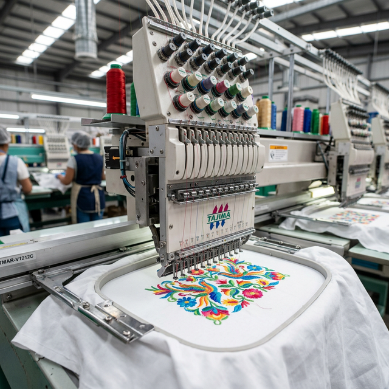

¿Por qué el cuidado correcto es crucial?
Un bordado de calidad está hecho para durar. Los hilos de alta densidad usados en el bordado digital son resistentes, pero el cuidado inadecuado puede reducir significativamente su vida útil: hilos sueltos, colores opacos, deformaciones de la tela o enrollamiento del diseño son consecuencias comunes del manejo incorrecto.
Con simples hábitos de cuidado, tus prendas bordadas pueden mantenerse perfectas por años — ya sean uniformes de trabajo, blusas regionales o gorras personalizadas.
Reglas de oro para lavar prendas bordadas
1. Lee siempre la etiqueta
Cada tela tiene sus propios requisitos de lavado. La etiqueta de la prenda es el primer parámetro a respetar. El bordado en sí suele ser más resistente que la tela que lo sostiene.
2. Temperatura del agua
Usa agua fría o tibia (máximo 30°C) para la mayoría de prendas bordadas. El agua caliente puede provocar que los hilos encojan y jalenen el tejido base, arruinando el diseño. Excepción: prendas hospitalarias que requieren esterilización a altas temperaturas — para éstas usamos hilos de poliéster industrial específicamente por su resistencia térmica.
3. Tipo de lavado
- A mano: El método más gentil. Presiona suavemente sin frotar el bordado directamente.
- Máquina: Usa ciclo delicado o de ropa fina. Mete la prenda con el bordado hacia adentro (al revés) para proteger el diseño del roce.
- Nunca: Frotes vigorosamente sobre el bordado, ni uses cepillos sobre él.
4. Detergente recomendado
Los detergentes líquidos suaves son preferibles a los polvos abrasivos. Evita los blanqueadores (cloro) en prendas de colores — pueden decolorar los hilos irreversiblemente. Para prendas blancas con bordado en color, ten especial cuidado con la zona bordada.
5. Secado correcto
- Extiende la prenda al aire en posición horizontal o colgada del hombro, nunca de la cintura.
- Evita la secadora para prendas con bordado delicado o con tramas sueltas.
- Si usas secadora, selecciona temperatura baja y saca la prenda ligeramente húmeda para terminar al aire.
- Nunca expongas el bordado directamente al sol por tiempos prolongados — los colores pueden desvanecerse.
Planchado de prendas bordadas
El planchado sobre el bordado puede aplanarlo y quitarle dimensión. Para planchar:
- Coloca la prenda al revés (bordado hacia abajo) sobre una toalla suave.
- Plancha la zona de la tela alrededor del bordado, no encima de él.
- Si necesitas planchar directamente, usa un trapo húmedo como barrera protectora.
- Nunca uses vapor directo sobre bordados con hilos metálicos (dorado, plateado).
Almacenamiento
Guarda las prendas bordadas colgadas o dobladas con el bordado hacia afuera. Si las doblas, evita doblar exactamente sobre el diseño; crea el doblez en un punto neutro de la tela. Para prendas regionales o de colección, usa bolsas de tela transpirable (no plástico) para evitar humedad.
"Un uniforme bien cuidado dura el doble. Y un bordado bien cuidado dura lo que la tela."
Reparación de hilos sueltos
Si detectas un hilo suelto, ¡no lo cortes! Con una aguja de coser, pasa el hilo hacia la parte trasera de la tela y anúdalo. Cortar puede tirar de los puntos adyacentes y dañar el diseño completo. Si el daño es mayor, contáctanos — podemos realizar reparaciones de bordados.
¿Necesitas reparar o renovar un bordado?
Contáctanos ahora